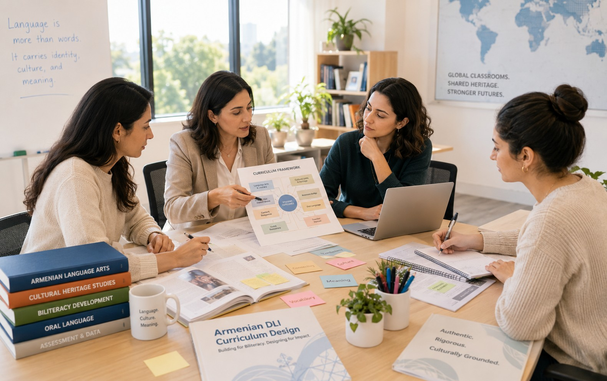

Curriculum Design and Innovation
Building what does not yet exist: standards-based, culturally grounded curricula in Armenian, designed for the world's dual language immersion classrooms.
The Curriculum Gap No One Talks About
Armenian is not an official language in any country outside of the Republic of Armenia. Every curriculum, every textbook, every instructional resource produced in Armenia is written for that context, where Armenian is the language of governance, civic life, and academic accountability.
The moment those materials cross into a classroom in the United States, Europe, Latin America, or Asia, teachers face an immediate problem: they are legally accountable to state or national academic standards written in another language entirely.

The Compliance Problem
Teachers manually sift through Armenian resources to find what approximates alignment with local standards. When nothing fits, they translate partner-language content into Armenian. Compliance is achieved. Authenticity is lost.
The DLI Fidelity Problem
Dual language immersion is not simply a bilingual model with a different language ratio. It is a distinct pedagogical architecture built for metalinguistic awareness and biliteracy. Scope and sequence, cross-linguistic connections, and the Bridge must be implemented with fidelity. Resources from general Armenian education were not designed for this.
The Cost
Using misaligned resources without significant adaptation is not just inefficient. It risks undermining the very model the program was built on and reducing Armenian to a vehicle rather than a living, culturally grounded language of instruction.
Armenia Produces Rich Instructional Resources
Excellent materials in Armenian, aligned to Armenian national standards, designed for Armenian schools.
DLI classrooms
abroad
Teachers Manually Filter and Translate
Selecting what approximates local standards, then translating partner-language content into Armenian to fill the gaps.
process...
Authenticity Is Lost
Armenian becomes a translation vehicle rather than a living instructional language. Cultural and linguistic richness are the casualties.
Built for the DLI Classroom. Built for the World.
Standards-Aligned, Culturally Responsive Curricula
Developed natively in Armenian and mapped to the academic standards of the countries where Armenian DLI programs operate, so teachers never have to choose between compliance and authenticity.
Instructional Resources Built for the DLI Classroom
Designed with biliteracy development, cross-linguistic transfer, and the DLI scope and sequence in mind, not adapted from general Armenian education, but built from the ground up for how DLI learners actually learn.
Ongoing Innovation as Pedagogy and Technology Evolve
Curriculum is not a static document. ADLEA's design process is iterative, responsive to new research, and built to evolve alongside the programs, educators, and learners it serves.
Ten Curriculum Domains. One Coherent Vision.
The following domains represent the full scope of what Armenian DLI programs need and what does not yet exist anywhere in the world outside of Armenia.
Armenian Language Arts and Literacy: Foundational Skills
Phonological awareness, phonics, and decoding in Armenian script for K–2, with explicit instruction in the Armenian alphabet, syllable structure, and sound-symbol relationships.
Armenian Language Arts and Literacy: Knowledge and Comprehension
A cumulative, knowledge-building curriculum in Armenian for K–5, organized around rich content domains with oral language development, vocabulary, writing, and comprehension woven throughout.
Armenian Biliteracy Bridge Units
Explicit cross-linguistic Bridge lessons for each grade level (K–5) that connect Armenian development to the partner language through structured metalinguistic comparison and transfer tasks.
Armenian DLI Scope and Sequence Framework
A master framework mapping Armenian language and literacy skills from Kindergarten through Grade 5 and into middle school, specifying what is introduced, developed, and assessed in each language and when cross-linguistic connections are made explicit.
Content-Area Instruction in Armenian
Standards-aligned units for teaching Science, Math, and Social Studies through Armenian, organized by grade level and mapped to the academic standards of the country or state where the program operates.
Armenian Cultural Units and Heritage Studies
Interdisciplinary units bringing Armenian history, geography, storytelling, music, and cultural heritage into the DLI classroom as authentic content, aligned to grade-level standards and biliteracy objectives.
Armenian DLI Assessments
Biliteracy-specific assessment tools for each grade level, including formative assessments embedded in instruction and summative assessments measuring academic language proficiency and content knowledge in Armenian.
Armenian Oral Language Development Resources
Structured oral language curricula and routines for Preschool through Grade 5, building academic speaking and listening in Armenian across all content areas.
Parent-Facing Materials in Armenian
Grade-level family guides explaining the DLI model, program expectations, and how to support biliteracy at home, written natively in Armenian for Armenian-speaking families and translated for non-Armenian-speaking families enrolled in the program.
Armenian DLI Teacher Manual
A comprehensive planning and instructional guide for DLI teachers, currently absent from the field, providing lesson frameworks, language objectives, cross-linguistic planning tools, and guidance for implementing the DLI model with fidelity across grade levels.
Want to Bring This to Your Program?
Reach out to learn how ADLEA can support your district, school, or community.
Contact Us